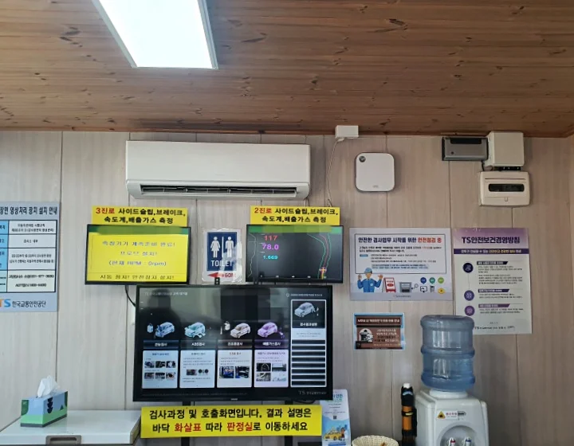

▲ 검사 유효기간을 넘기는 순간부터 과태료 시계가 돌아가기 시작한다 ⓒ 대한민국 정책브리핑(korea.kr)
"어차피 몇만 원이겠지"라고 생각하다가 몇 달 뒤 고지서를 보고 놀라는 운전자가 매년 적지 않습니다. 자동차관리법상 정기검사는 차량 유지비 중에서도 가장 잊기 쉬운 항목이지만, 그 대가는 결코 가볍지 않습니다. 검사 유효기간이 끝난 뒤에도 검사를 받지 않으면 지연 일수에 비례해 과태료가 계속 불어나고, 이를 1년 넘게 방치하면 운행정지명령과 번호판 영치, 심하면 직권말소까지 이어질 수 있습니다.
1. 하루 늦을 때마다 커지는 과태료, 구조를 알면 대비할 수 있다

▲ 검사 대기실 모니터로 검사 진행 상황과 항목별 결과를 실시간으로 확인할 수 있다 ⓒ 대한민국 정책브리핑(korea.kr)
자동차관리법 시행령에 따르면 정기검사 과태료는 검사 유효기간이 끝난 날부터가 아니라, 실질적으로 검사가 가능한 기간(만료일+31일)이 지난 다음 날부터 계산이 시작됩니다. 이 시점부터 30일 이내에 검사를 마치면 과태료는 4만원으로 고정되지만, 30일을 넘어 114일 이내까지 지연되면 4만원에 31일째부터 3일을 초과할 때마다 2만원씩 추가되는 구조입니다. 즉 며칠을 더 미루느냐에 따라 금액이 계단식으로 불어나는 셈입니다.
| 지연 기간 | 과태료 |
|---|---|
| 0~30일 | 4만원 (고정) |
| 31~114일 | 4만원 + 31일째부터 3일 초과 시마다 2만원씩 추가 |
| 115일 이상 | 60만원 (상한액) |
115일 이상 검사를 받지 않으면 더 이상 금액이 늘지 않고 상한액인 60만원이 그대로 부과됩니다. 관할 지자체가 부과 주체이기 때문에 실제 고지서를 받기 전까지는 금액을 체감하기 어렵지만, 계산 구조 자체는 전국 공통으로 적용됩니다.
2. 과태료로 끝나지 않는다, 계속 미루면 벌어지는 일
과태료만 내고 계속 검사를 미루면 그다음 단계로 관할 기관이 검사명령을 내립니다. 이 검사명령마저 이행하지 않은 채 1년 이상 경과하면 차량에는 운행정지명령이 내려지고, 번호판이 영치될 수 있습니다.
| 단계 | 내용 |
|---|---|
| 1단계 | 과태료 부과 (최대 60만원) |
| 2단계 | 관할 기관의 검사명령 발동 |
| 3단계 (1년 이상 방치) | 운행정지명령·번호판 영치 |
| 운행정지명령 위반 시 | 1년 이하 징역 또는 1천만원 이하 벌금 |
| 계속 방치 | 관할 관청의 직권말소 |
3. 결국 가장 저렴한 대응책은 '미리 예약'
정기검사는 몇만 원의 과태료로 끝나는 문제가 아닙니다. 방치가 길어질수록 운행정지명령, 번호판 영치, 형사처벌, 심하면 직권말소까지 이어지는 계단식 리스크입니다. 유효기간 만료 전에 미리 예약해두는 습관 하나가 결국 가장 저렴하고 확실한 대응책입니다.